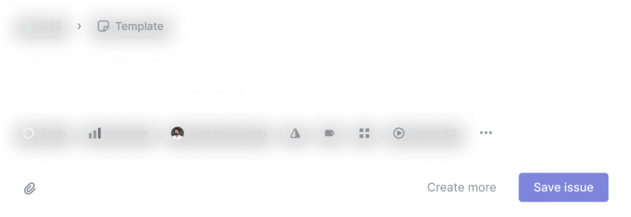
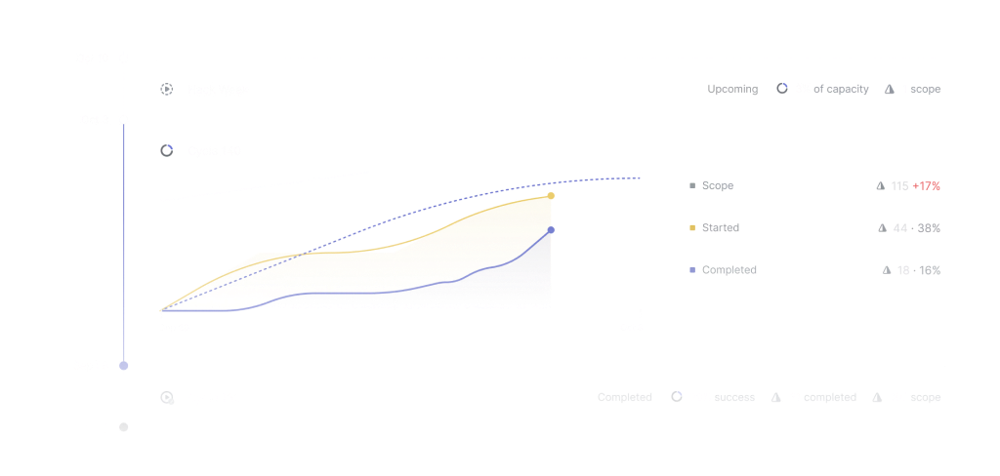
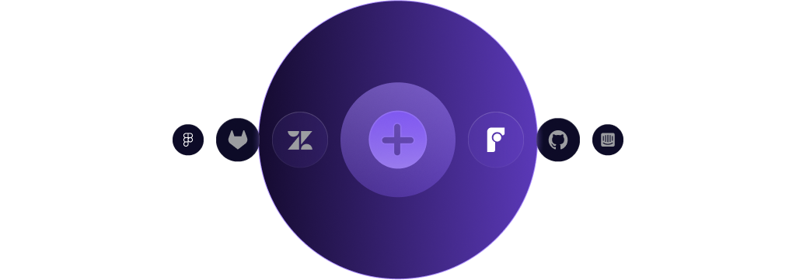

Linear Mobile v0.1
Linear is a better way
to build products
Meet the new standard for modern software development.
Streamline issues, sprints, and product roadmaps.
Powering the world's best product teams.
From next-gen start ups to established enterprises.
Unlike any tool
you've used before
Designed to the last pixel and engineered with unforgiving precision, Linear combines UI elegance with world-class performance.
Issue tracking
you'll enjoy using

Create tasks in seconds, discuss issues in context, and breeze through your work in views tailored to you and your team.
Parent and sub-issues. Break
larger tasks into smaller issues.
Automated backlog. Linear will
auto-close and auto-archive issues.
Custom workflows. Define
unique issue states for each team.
Filters and custom views. See
only what’s relevant for you.
 Discussion. Collaborate on
Discussion. Collaborate on
issues without losing context.
Issue templates. Guide your
team to write effective issues.
Build momentum
with Cycles

Cycles focus your team on what work should happen next. A healthy routine to maintain velocity and make meaningful progress.
Automatic tracking. Any started issues
are added to the current cycle.
Scheduled. Unfinished work rolls
over to the next cycle automatically.
Fully configurable. Define start
date, end date, duration, and more.
 Predict delays. Get warnings
Predict delays. Get warnings
for at-risk cycles.
Scope creep. Understand which
issues are added mid-cycle.
Be prepared. Schedule work in
advance with upcoming cycles.
Set direction
with Roadmaps

Plan visually, collaborate in cross-team projects, and make better decisions with progress insights and project updates.
Multi-team projects.
Collaborate across teams and
departments.
 Project documents. Write
Project documents. Write
project briefs and specs directly
in Linear.
Custom roadmaps. Organize
projects across multiple roadmaps.
Timeline veiws. Visualize the
product journey ahead.
Project Insights. Track scope,
velocity and progress overtime.
Personal notifications. Stay in
the loop on project activity and updates.
Linear workflows
Exponential results

From customer support integrations to powerful Git automations, Linear streamlines the entire product development process.
GitHub and GitLab. Sync
PRs with issues that close
automatically.
Slack and Discord. Create
issues and set up alerts.
Sentry. Automatically create
issues from code exceptions
Airbyte. Sync workspace data
to external warehouses and databases.
Front, Intercom, Zendesk.
Keep a tight loop with your users.
Figma. Streamline work across
dwsign and engineering.